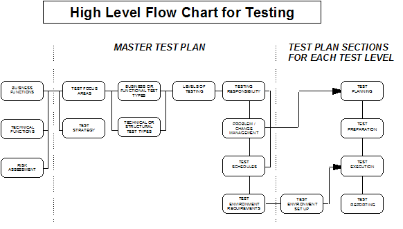
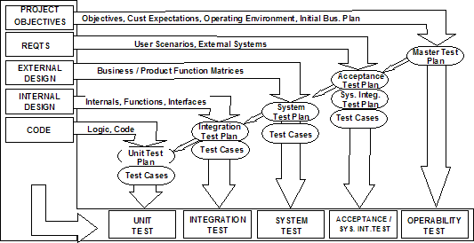

For medium to large-sized projects, with more than 3 or 4 stakeholder groups, it is highly recommended that a
facilitated master test planning workshop be held early on during project definition time. Typically the master test
planning workshop should take place some time after the solution requirements have been scoped and signed off, and
before the micro design is completed. The key steps of the master test planning workshop are:
-
Major stakeholder groups are identified.
-
Key project sponsors are interviewed to get their priorities with regard to quality and testing. Those
interviewed could be the project executives and/or the business executives sponsoring the project. The
interviews can be used to explain the importance of holding the joint session, and to obtain the sponsor’s
buy-in to send their representatives to attend the session.
-
Meetings with the development manager/team leaders, infrastructure or environment team manager/lead, the
operations manager and representatives of other business units, as appropriate, are conducted to present an
overview of the test strategy, and to gain their commitment for time to participate in the planning session
-
The workshop is scheduled, all pre-work completed, and the workshop is conducted.
-
The results are documented, and any issues or action items are identified and followed up.
-
The master test plan is documented, reviewed, and signed off.
A schematic of the master test plan, and how it ties together all the detailed test plans, is given below:

Figure 1: High Level Flow Chart for Testing
The chart below provides an overview of full lifecycle testing.

Figure 2: Overview of Full lifecycle testing
|